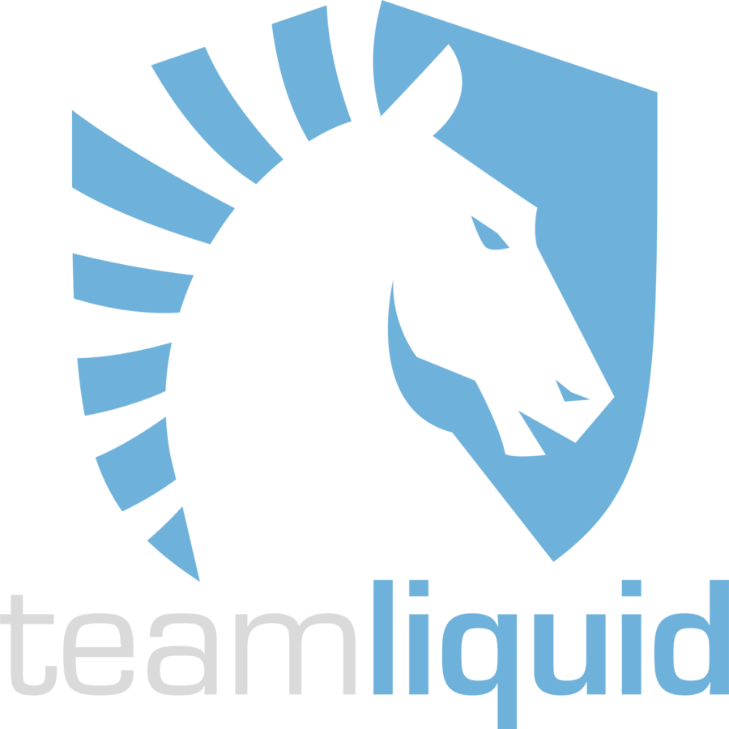

Counter-Strike: Global Offensive (CS:GO) is a multiplayer first-person shooter video game developed by Hidden Path Entertainment and Valve Corporation. It is the fourth game in the Counter-Strike series and was released for Microsoft Windows, OS X, Xbox 360, and PlayStation 3 on August 21, 2012, while the Linux version was released in 2014.
The game pits two teams against each other: the Terrorists and the Counter-Terrorists. Both sides are tasked with eliminating the other while also completing separate objectives. The Terrorists, depending on the game mode, must either plant the bomb or defend the hostages, while the Counter-Terrorists must either prevent the bomb from being planted, defuse the bomb, or rescue the hostages. There are nine game modes, all of which have distinct characteristics specific to that mode. The game also has matchmaking support that allows players to play on dedicated Valve servers, as well as allowing members of the community to host their own servers with custom maps and game modes. A battle-royale game-mode, "Danger Zone", was introduced in 2018.
There are more than 30 Best teams in the world right now, I have linked the TOP 3 teams in the world:
Astralis is a Danish organization owned by players of the former Danish Team SoloMid/Questionmark lineup, with the help of their manager, Frederik "realition" Byskov. The rights to the Astralis name were obtained from the original founders of the Finnish Counter-Strike team.
As of May 19th and as a result of cajunb and Kjaerbye swapping teams with eachother, Astralis later announced in a Q&A on their website that these roster changes do not automatically revoke him of his ownership with the organization, nor automatically grant Kjaerbye ownership with the organization, as the other staff may later decide what takes effect later on. [2] While Bo "wantz" Vestergaard was still in the team as a backup, he was never declared an owner nor granted any form of ownership either.
the current roster right now is:
ID
Name
Join Date
dev1ce
Nicolai Reedtz
2016-01-18
dupreeh
Peter Rasmussen
2016-01-18
Xyp9x
Andreas Højsleth
2016-01-18
gla1ve
Lukas Rossander
2016-10-24
Magisk
Emil Reif
2018-02-07
zonic (Coach)
Danny Sørensen
2016-01-18
Liquid 
Team Liquid is a professional team, founded in the Netherlands in 2000. Originally a Brood War clan, the team switched to StarCraft2 during the SC2 Beta in 2010, and became one of the most successful foreign teams. On January 13, 2015, it was announced that the team had formed a Counter-Strike: Global Offensive division.
Team Liquid is also strongly associated with its website, TeamLiquid.net. Launched on May 1, 2001, it has developed through the years into a focal point for StarCraft coverage, eventually becoming the most-browsed StarCraft-related website in the world, gathering thousands of members (including several professional players) and centralizing news about the global SC2 scene. The website also features a pro-gaming database, the TLPD, as well as a wiki dedicated to Brood War, StarCraft II, Hearthstone, Dota 2, Super Smash Brothers: Melee, Heroes of the Storm, Overwatch, and Counter-Strike.
The current roster right now is:
ID
Name
Join Date
nitr0
Nicholas Cannella
2015-01-13
EliGE
Jonathan Jablonowski
2015-03-22
Twistzz
Russel Van Dulken
2017-04-14
NAF
Keith Markovic
2018-02-05
Stewie2K
Jacky Yip
2018-12-21
adreN (Coach)
Eric Hoag
2018-12-22
NaVi
Natus Vincere (Latin: "born to win", often abbreviated as Na'Vi or NaVi) is a leading multi-game esports organization from Ukraine. It is the first team in Counter-Strike history to win three major tournaments in one calendar year - Intel Extreme Masters, Electronic Sports World Cup and World Cyber Games 2010.